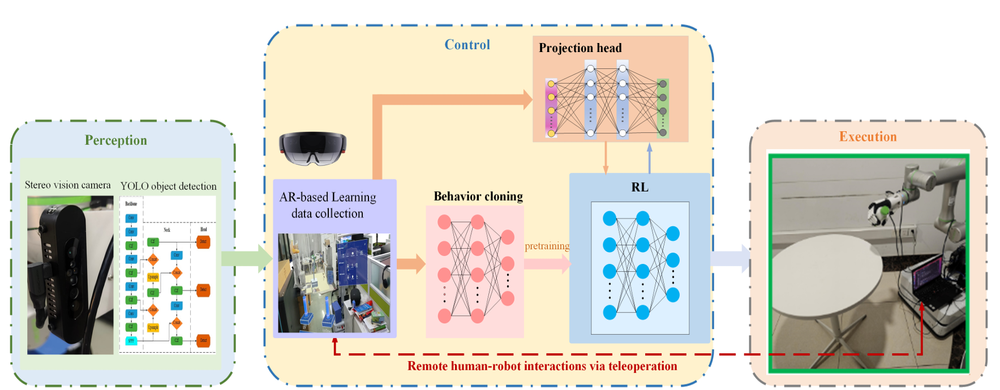

Design structure of the proposed algorithm: Differing from the existing algorithms, the expert demonstration data are leveraged for behavior-cloning-based pretraining, and augmented RL policy with the help of projection head.

This paper focuses on the scalable robot learning for manipulation in the dexterous robot arm-hand systems, where the remote human-robot interactions via augmented reality (AR) are established to collect the expert demonstration data for enhancing the system robustness.
In such a system, we present a unified framework to address the general manipulation task problem. Specifically, the proposed algorithm consists of two phases:
To validate the efficacy of the proposed algorithm, both the physics simulations via PyBullet and real-world trials are carried out. The results demonstrate that compared to the proximal policy optimization and soft actor-critic policies, the proposed model-free algorithm not only significantly reduces the training time, but also achieves much better performance in terms of the success rate for completing the manipulation tasks.
By conducting the ablation study, it is confirmed that the proposed RL method with contrastive learning can well overcome the policy collapse.
Bottle grasping simulation
BibTex Code Here